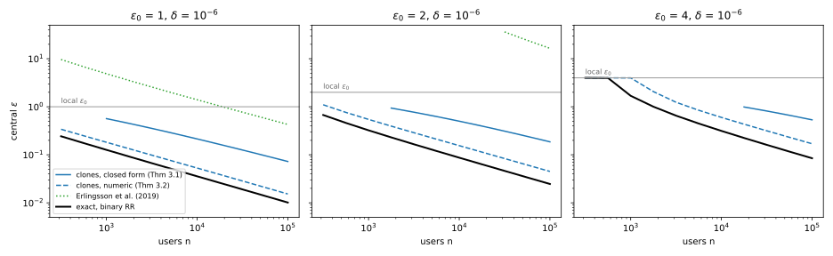
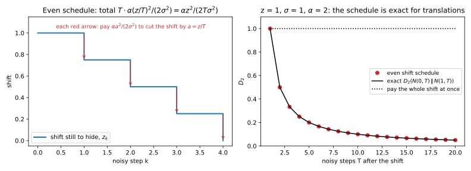

35 Amplification by shuffling and by iteration
Amplification by subsampling showed that uncertainty is worth privacy: a step that uses your record only with probability \(q\) leaks roughly \(q\) times as much. What are two other kinds of uncertainty worth? The first is uncertainty about which report is yours. In the shuffle model of Trust models, each of \(n\) users randomizes their own data with a local randomizer that satisfies differential privacy (DP) at level \(\varepsilon_0\), and a shuffler mixes the reports before the analyst sees them. The second is uncertainty about when your record was used. Noisy gradient descent (GD) on a convex loss forgets, so when only the final model is released, a record used early is better hidden than composition says.
Every result uses one idea. You show that a procedure which does not depend on your record can make what the adversary sees from a much simpler pair of distributions. Then, by the data-processing inequality, the simple pair’s privacy holds for the real output. For shuffling the simple pair is a pair of counts, and for iteration it is a pair of Gaussians, or a pair that a chain of noisy steps keeps close.
The numbers come from two running examples. A company asks 10,000 users a yes-or-no question through randomized response at \(\varepsilon_0 = 2\), a weak local guarantee, but behind a shuffler the reports are \((0.0870, 10^{-6})\)-DP. A model is trained for 10,000 steps of full-batch noisy GD, with noise ten times as large as the change one record makes to a step. If every iterate is released there is no guarantee at all, while the final model alone of a contracting run gives \(\varepsilon = 6.5534\). Throughout, neighbouring datasets \(D \sim D'\) are replace-one: they differ in the value of one record, yours. The shuffling here is of anonymous reports, not the shuffle-and-partition batching of Amplification by subsampling, for which no comparable theorem holds.
35.1 Shuffled randomized response, exactly
Before you bound shuffling for every randomizer, compute it exactly for one. For binary randomized response the privacy of the shuffled reports takes milliseconds to compute, and that value is the reference for every general bound in Section 35.2. Randomized response, from the definition of differential privacy, reports a bit truthfully with probability \(p = e^{\varepsilon_0}/(1 + e^{\varepsilon_0})\) and flipped otherwise (that chapter writes \(t\) for \(p\)). One report is \(\varepsilon_0\)-DP, because a change of the bit makes any report likelier by a factor of at most \(p/(1 - p) = e^{\varepsilon_0}\).
Definition 35.1 (Shuffled randomized response) Each of \(n\) users holds a bit and sends its randomized-response report to a shuffler, which outputs the \(n\) reports in a uniformly random order. The analyst sees only this shuffled sequence, whose order carries no information, so the page calls it the bag of reports.
Earlier chapters give the two tools. The first computes \(\delta\): for two distributions \(P\) and \(Q\) on a finite set, the smallest \(\delta\) at a given \(\varepsilon\) is the hockey-stick divergence \(E_{e^\varepsilon}(P\|Q)\), which by Lemma 20.2 sums \(P(y) - e^\varepsilon Q(y)\) over the outcomes \(y\) whose privacy loss \(\ln(P(y)/Q(y))\) exceeds \(\varepsilon\). The exact \(\delta(\varepsilon)\) of a pair is the larger of the two directions, \(E_{e^\varepsilon}(P\|Q)\) and \(E_{e^\varepsilon}(Q\|P)\). The second tool, the data-processing inequality of Theorem 3.5, says that a map that does not depend on the data cannot move two distributions further apart.
Once the order is gone, only the number of 1-reports can tell the analyst anything, and your report moves that number by at most one.
Theorem 35.1 (The count is the whole view) In shuffled randomized response, let the other \(n - 1\) users all hold 0, and let your bit be 0 in \(D\) and 1 in \(D'\). Write \(b\) for the probability mass function of \(\mathrm{Bin}(n - 1, 1 - p)\). Then the bag has the same divergences as the number \(Y\) of 1-reports, whose distributions on \(D\) and \(D'\) are \[P(y) = p\,b(y) + (1 - p)\,b(y - 1), \qquad Q(y) = (1 - p)\,b(y) + p\,b(y - 1), \qquad y = 0, \dots, n. \tag{35.1}\]
Proof. The plan is to show that the count carries everything, then to split it into your report and the others’, and to condition on yours.
- The bag is the count. Given the count \(Y\), every arrangement of \(Y\) ones and \(n - Y\) zeros is equally likely under both datasets, because the shuffle is uniform. So randomness that does not depend on the data can rebuild the bag from the count, and the data-processing inequality, applied in both directions, gives the two the same divergences.
- Split the count. Write \(Y = S + B\), where \(S\) counts the 1-reports among the others and \(B\) is your report. Each other user reports 1 with probability \(1 - p\), independently, so \(S \sim \mathrm{Bin}(n - 1, 1 - p)\) on both datasets.
- Your report. You hold 0 in \(D\), so \(\Pr[B = 0] = p\), and you hold 1 in \(D'\), so \(\Pr[B = 0] = 1 - p\).
- Condition on your report. The count is \(y\) either when \(B = 0\) and \(S = y\), or when \(B = 1\) and \(S = y - 1\), so by the law of total probability \[\Pr[Y = y] = \Pr[B = 0]\,b(y) + \Pr[B = 1]\,b(y - 1), \tag{35.2}\] and the two values of \(\Pr[B = 0]\) from step 3 give Equation 35.1.
The pair assumes that the other users all hold 0, but a guarantee must hold for the worst number \(m\) of them who hold 1. The chapter’s script (Section 35.6) scans every \(m\) at \(n = 1000\), and \(m \le 30\) at \(n = 10^4\) and \(10^5\). The pair \(m = 0\) is the worst or within \(10^{-4}\) of the worst found, so the chapter calls its \(\varepsilon\) exact.
Shuffling never lowers the pure-DP level. At the count \(y = 0\) the ratio \(P(0)/Q(0)\) is \(e^{\varepsilon_0}\) for every \(n\), and only the probability of that outcome shrinks. So shuffling amplifies by moving the bad outcomes into \(\delta\).
How does the privacy improve with the number of users? The count is a sum of many independent bits, so it is close to normal. Two normals with the same variance are as hard to tell apart as two unit-variance normals a distance \(\mu\) apart, where \(\mu\) is their mean difference in standard deviations. Such a pair satisfies Gaussian differential privacy (GDP) of f-DP and Gaussian DP with parameter \(\mu\), written \(\mu\)-GDP, and its exact \(\delta(\varepsilon)\) is the curve of Theorem 20.3. So you need the two moments that set \(\mu\).
Proposition 35.1 (Moments of the shuffled count) In the setting of Theorem 35.1, the count \(Y\) has variance \(np(1 - p)\) on both datasets, and its means differ by \(2p - 1\). So a pair of normals with these moments is \(\mu\)-GDP with \[\mu = \frac{2p - 1}{\sqrt{np(1 - p)}} = \frac{2\sinh(\varepsilon_0/2)}{\sqrt n}. \tag{35.3}\]
Proof.
- The variance. Every report, yours included, is a bit that is 1 with probability \(p\) or \(1 - p\), so each has variance \(p(1 - p)\). The \(n\) reports are independent, so their variances add to \(np(1 - p)\) on both datasets.
- The mean difference. Only your report changes between the datasets, and its mean moves from \(1 - p\) to \(p\), a difference of \(2p - 1\).
- Simplify. In terms of \(\varepsilon_0\), the numerator is \(2p - 1 = (e^{\varepsilon_0} - 1)/(e^{\varepsilon_0} + 1)\) and the square root is \(\sqrt{p(1 - p)} = e^{\varepsilon_0/2}/(e^{\varepsilon_0} + 1)\). The factors \(e^{\varepsilon_0} + 1\) cancel in the ratio, and after division of top and bottom by \(e^{\varepsilon_0/2}\) what remains is \(e^{\varepsilon_0/2} - e^{-\varepsilon_0/2}\), which is \(2\sinh(\varepsilon_0/2)\).
So the privacy falls like \(1/\sqrt n\), with a constant that grows like \(e^{\varepsilon_0/2}\). The approximation is good when there are many 1-reports to hide among: at \(n = 10^5\), \(\varepsilon_0 = 2\) and \(\delta = 10^{-6}\) it gives \(\varepsilon = 0.0244\) against the exact 0.0247 (Table 35.2). But at \(n = 1000\) and \(\varepsilon_0 = 4\), the others send on average only \(999/(1 + e^4) = 18.0\) 1-reports, a count far from normal, and it gives 0.9667 against the exact 1.6910. The exact computation costs milliseconds, so use it.

Example 35.1 Start with the smallest case, \(n = 3\) users at \(\varepsilon_0 = \ln 3\), so \(p = \frac34\). The two other users hold 0, so their count has \(b = (\frac9{16}, \frac6{16}, \frac1{16})\), and Table 35.1 fills in Equation 35.1. At \(\varepsilon = 0.5\), where \(e^{0.5} = 1.6487\), only \(y = 0\) has a ratio \(P/Q\) above \(e^{0.5}\), so only it enters the sum: \[E_{e^{0.5}}(P\|Q) = \frac{27 - 9e^{0.5}}{64} = 0.1900. \tag{35.4}\] In the other direction the outcomes \(y = 2\) and \(y = 3\) enter and give 0.0861, so \(\delta(0.5) = 0.1900\). A single unshuffled report has \(\delta(0.5) = \frac34 - \frac14e^{0.5} = 0.3378\), so even two other users nearly halve \(\delta\).
| Count \(y\) | 0 | 1 | 2 | 3 |
|---|---|---|---|---|
| \(b(y)\), others’ 1-reports | 9/16 | 6/16 | 1/16 | 0 |
| \(P(y)\), you hold 0 | 27/64 | 27/64 | 9/64 | 1/64 |
| \(Q(y)\), you hold 1 | 9/64 | 33/64 | 19/64 | 3/64 |
| \(P(y)/Q(y)\) | 3.0000 | 0.8182 | 0.4737 | 0.3333 |
Now the survey. Its 10,000 users answer at \(\varepsilon_0 = 2\), so each report is the truth with probability \(p = e^2/(1 + e^2) = 0.8808\). Each report alone is only 2-DP, but the shuffled bag is \((0.0870, 10^{-6})\)-DP, and the normal approximation Equation 35.3 gives 0.0844 (Table 35.2).
35.2 The clone bound for any local randomizer
Randomized response on bits is one randomizer. In practice users send histograms, \(k\)-ary responses or noisy vectors, so you need one bound for every \(\varepsilon_0\)-DP local randomizer \(R\), a randomized map from a user’s data to a report. Erlingsson et al. (2019) and Balle et al. (2019) gave early bounds. The one to use today is that of Feldman, McMillan & Talwar (2021), and its central reduction is short enough to prove here.
The reduction rests on clones. Lemma 26.4 shows that any \(\varepsilon_0\)-DP randomizer, run on another user’s data, gives with probability \(e^{-\varepsilon_0}\) a report with exactly the law of one of your two possible reports. After the shuffle, the adversary can only count the reports that look like your \(D\)-version and those that look like your \(D'\)-version, and the clones blur both counts. Write \(x^0\) and \(x^1\) for the values you hold in \(D\) and in \(D'\).
Theorem 35.2 (The clone reduction) Let every user apply the same \(\varepsilon_0\)-DP local randomizer \(R\), and shuffle the reports. Let the number of clones be \(N_c \sim \mathrm{Bin}(n - 1, e^{-\varepsilon_0})\), let \(A \sim \mathrm{Bin}(N_c, \frac12)\) given \(N_c\), and let the bit \(F \sim \mathrm{Bern}\big(\frac{e^{\varepsilon_0}}{e^{\varepsilon_0} + 1}\big)\) be independent of both. Then the shuffled output on \(D\) and on \(D'\) is the same post-processing of \[\tilde P = (A + F,\; N_c - A + 1 - F) \qquad\text{and}\qquad \tilde Q = (A + 1 - F,\; N_c - A + F). \tag{35.5}\] Each pair counts the reports that look like your \(D\)-version and like your \(D'\)-version, and \(F = 1\) when your own report points to your true value.
Proof. The plan is to split every other user’s report into clones and a leftover, to show that after the shuffle only the numbers of clones matter, and then to replace your own report by a randomized-response bit.
- Every report contains clones of yours. By Lemma 26.4, for every value \(x\) there is a leftover distribution \(\mathrm{LO}(x)\) with \[R(x) = \frac{e^{-\varepsilon_0}}{2}R(x^0) + \frac{e^{-\varepsilon_0}}{2}R(x^1) + \big(1 - e^{-\varepsilon_0}\big)\mathrm{LO}(x). \tag{35.6}\]
- Read the mixture as a three-sided coin. To sample a mixture, you first choose a component with its weight. So each other user flips a coin with faces “0”, “1” and “leftover”, and draws from \(R(x^0)\), \(R(x^1)\) or \(\mathrm{LO}(x)\). The users flip independently, so the number of clones has the law of \(N_c\), and given \(N_c\) the number of 0-clones has the law of \(A\).
- After the shuffle, only the counts matter. Give yourself the face 0 on \(D\) and 1 on \(D'\). Someone who knows every other user’s data, but not your bit, can make the shuffled bag from the numbers of 0-faces and 1-faces alone: draw that many reports from \(R(x^0)\) and \(R(x^1)\), a leftover report for every other user, and shuffle. Those numbers are \((A + 1, N_c - A)\) on \(D\) and \((A, N_c - A + 1)\) on \(D'\), so by the data-processing inequality the output is no more distinguishable than these counts (Lemma 3.3 of the paper).
- Your own report is a randomized response. Kairouz, Oh & Viswanath (2015) show that any \(\varepsilon_0\)-DP randomizer on two inputs is a post-processing of binary randomized response. So there are two distributions \(Q_0\) and \(Q_1\) such that \(R(x^0)\) draws from \(Q_0\) with probability \(\frac{e^{\varepsilon_0}}{e^{\varepsilon_0} + 1}\) and from \(Q_1\) otherwise, and \(R(x^1)\) does the reverse. Your report therefore comes from the distribution of your true value exactly when \(F = 1\).
- Count again by \(Q_0\) and \(Q_1\). The weights in step 4 are symmetric, so a clone, a fair mix of \(R(x^0)\) and \(R(x^1)\), is also a fair mix of \(Q_0\) and \(Q_1\). Count reports drawn from \(Q_0\) and from \(Q_1\) instead of faces. The clones give \((A, N_c - A)\), and your report adds 1 to the first count on \(D\) when \(F = 1\) and to the second when \(F = 0\), the reverse on \(D'\). That is Equation 35.5. This step is Lemma 3.4 of the paper, and Section L.3 in the appendices gives the full argument for a fixed randomizer.
The exact \(\delta(\varepsilon)\) of this pair of two-dimensional counts, computed with Lemma 20.2, is the numeric clone bound. Feldman et al. also bound it in closed form, with Chernoff bounds on \(N_c\) and on \(A\) (their Lemma 3.5), which gives Theorem 26.2 of Trust models. For any \(\delta \in [0, 1]\) with \(\varepsilon_0 \le \ln\big(\frac{n}{16\ln(2/\delta)}\big)\), the shuffled output is \((\varepsilon, \delta)\)-DP with \[\varepsilon \le \ln\left(1 + \frac{e^{\varepsilon_0} - 1}{e^{\varepsilon_0} + 1}\left(\frac{8\sqrt{e^{\varepsilon_0}\ln(4/\delta)}}{\sqrt n} + \frac{8e^{\varepsilon_0}}{n}\right)\right). \tag{35.7}\] Section L.3 carries out a version of the Chernoff calculation. The condition, \(ne^{-\varepsilon_0} \ge 16\ln(2/\delta)\), asks for enough expected clones that \(N_c\) stays close to its mean except with probability about \(\delta\). At \(\delta = 10^{-6}\) it allows \(\varepsilon_0\) up to 1.460 for \(n = 1000\), 3.763 for \(n = 10^4\) and 6.066 for \(n = 10^5\).
The closed form scales as Proposition 35.1 predicts for the count. Given \(n_c\) clones, the first coordinates of the pair, \(A + F\) and \(A + 1 - F\), have means that differ by \(2\Pr[F = 1] - 1 = \frac{e^{\varepsilon_0} - 1}{e^{\varepsilon_0} + 1}\), while \(A\) has standard deviation \(\sqrt{n_c}/2\). With \(n_c \approx ne^{-\varepsilon_0}\), the ratio of the two is \(2/(1 + e^{-\varepsilon_0})\) times the \(\mu\) of Equation 35.3. The factor exceeds 1 because the clone argument counts only the fraction \(e^{-\varepsilon_0}\) of reports certain to look like yours. In Table 35.2 the numeric clone bound is 1.44 to 2.00 times the exact \(\varepsilon\) wherever there are many expected clones, close to that factor, and 2.36 at \(n = 1000\) and \(\varepsilon_0 = 4\), with only about \(999e^{-4} = 18.3\) of them. No general bound can go below the exact column, since binary randomized response is one of the randomizers it covers.
The closed form is looser again, because its Chernoff constants are safe but not sharp. Where its condition holds it is 3.10 to 4.75 times the numeric clone bound, and 4.47 to 7.55 times the exact \(\varepsilon\). The first bound, of Erlingsson et al. (2019), grows like \(e^{3\varepsilon_0}\) instead of \(e^{\varepsilon_0/2}\). So use the closed form to reason about scaling, and the numeric bound to deploy.
| \(n\) | \(\varepsilon_0\) | Exact, binary randomized response | Normal approx., Equation 35.3 | Clones, numeric | Clones, closed form | Erlingsson et al. |
|---|---|---|---|---|---|---|
| 1,000 | 1 | 0.1266 | 0.1212 | 0.1824 | 0.5662 | — |
| 1,000 | 2 | 0.3233 | 0.2890 | 0.5455 | n/a | — |
| 1,000 | 4 | 1.6910 | 0.9667 | 3.9900 | n/a | — |
| 10,000 | 1 | 0.0357 | 0.0352 | 0.0530 | 0.2140 | — |
| 10,000 | 2 | 0.0870 | 0.0844 | 0.1550 | 0.5009 | — |
| 10,000 | 4 | 0.3146 | 0.2816 | 0.6009 | n/a | — |
| 100,000 | 1 | 0.0101 | 0.0101 | 0.0153 | 0.0726 | 0.4285 |
| 100,000 | 2 | 0.0247 | 0.0244 | 0.0450 | 0.1862 | — |
| 100,000 | 4 | 0.0847 | 0.0822 | 0.1698 | 0.5346 | — |

Example 35.2 For the survey of 10,000 users at \(\varepsilon_0 = 2\), Table 35.2 gives 0.0870 exactly, 0.1550 from the numeric clone bound and 0.5009 from the closed form.
The choice of accountant can decide whether a deployment is feasible. Suppose \(n = 10^5\) users send a bit and you want central \(\varepsilon \le 0.2\) at \(\delta = 10^{-6}\). The closed form allows \(\varepsilon_0 = 2\) (0.1862), but the numeric clone bound allows \(\varepsilon_0 = 4\) (0.1698), where each report is the truth with probability \(p = 0.9820\) instead of 0.8808.
35.3 Amplification by iteration
How much does it help to hide when your record was used? Projected noisy stochastic gradient descent (SGD) makes one pass over the data. At step \(t\) it takes a gradient step on record \(x_t\), adds Gaussian noise and projects back onto a convex set. If every iterate is released, only the noise of step \(t\) protects \(x_t\), but if only the final iterate is released, the noise of every later step also covers it. The obstacle is that the later steps are maps applied to random points, so their variances do not simply add. Feldman, Mironov, Talwar & Thakurta (2018) overcame it with a divergence that allows a bounded shift, and their argument needs every step to be a map that never pushes two points further apart.
Definition 35.2 (Contractive noisy iteration) A map \(\psi\) is a contraction if \(\|\psi(u) - \psi(v)\| \le \|u - v\|\) for all points \(u\) and \(v\). A contractive noisy iteration is a sequence \(X_t = \psi_t(X_{t-1}) + Z_t\), for \(t = 1, \dots, T\), where each \(\psi_t\) is a contraction and \(Z_t \sim \mathcal N(0, \sigma^2 I)\) is fresh noise of standard deviation \(\sigma\).
A gradient step \(\theta \mapsto \theta - \eta\nabla\ell(\theta)\) on a convex, \(\beta\)-smooth loss \(\ell\) with learning rate \(\eta \le 2/\beta\) is a contraction, by Lemma 7.2. So is the projection \(\Pi_K\) onto a closed convex set \(K\), which maps each point to its nearest point of \(K\), and so is their composition.
Lemma 35.1 (Projection is a contraction) Let \(K\) be a closed convex set with projection \(\Pi_K\). Then \(\|\Pi_K u - \Pi_K v\| \le \|u - v\|\) for all points \(u\) and \(v\).
Proof.
- Two obtuse angles. Step 2 of the proof of Lemma 6.2 shows that the nearest point makes an obtuse angle with every other point of the set: \(\langle u - \Pi_K u, \theta - \Pi_K u\rangle \le 0\) for every \(\theta \in K\). Take \(\theta = \Pi_K v\), and then exchange the roles of \(u\) and \(v\).
- Add them. The sum of the two inequalities, with the terms collected, is \[\|\Pi_K u - \Pi_K v\|^2 \le \langle u - v, \Pi_K u - \Pi_K v\rangle. \tag{35.8}\]
- Cauchy–Schwarz. The right side is at most \(\|u - v\|\,\|\Pi_K u - \Pi_K v\|\). Division by \(\|\Pi_K u - \Pi_K v\|\), when it is not 0, gives the claim.
The step that uses your record pushes the two runs, on \(D\) and on \(D'\), apart, and after that the contractions keep the gap from growing while the noise blurs it. So you track how far apart the runs might be, a shift, and the divergence that would remain if one run could be moved by that shift. To move a random variable by at most \(z\) means to pair each of its values with one at most \(z\) away, a pairing called a coupling.
Definition 35.3 (Shifted Rényi divergence) For random vectors \(X\) and \(X'\), an order \(\alpha > 1\) and a shift \(z \ge 0\), the shifted Rényi divergence is \[D_\alpha^{(z)}(X\|X') = \inf\big\{D_\alpha(Y\|X') : \text{some coupling of } X \text{ and } Y \text{ has } \|X - Y\| \le z \text{ almost surely}\big\}, \tag{35.9}\] where \(D_\alpha\) is the Rényi divergence of Divergences. With \(z = 0\) it is \(D_\alpha\) itself.
The noise pays off a shift at the price that it charges to hide one. Two normals of standard deviation \(\sigma\) whose means are \(a\) apart have, by Proposition 3.3, \[R_\alpha(a) = D_\alpha\big(\mathcal N(0, \sigma^2)\,\|\,\mathcal N(a, \sigma^2)\big) = \frac{\alpha a^2}{2\sigma^2}. \tag{35.10}\] Lemmas 20 and 21 of Feldman et al. drive everything. The first lets the noise pay off part of the shift at this price.
Lemma 35.2 (Shift reduction) Let \(Z \sim \mathcal N(0, \sigma^2 I)\) be independent of \(X\) and of \(X'\). For all \(z \ge 0\) and \(a \ge 0\), \[D_\alpha^{(z)}(X + Z\,\|\,X' + Z) \le D_\alpha^{(z + a)}(X\|X') + R_\alpha(a). \tag{35.11}\]
The proof couples the two variables and splits each displacement into a part carried forward and a part of length at most \(a\) that the noise pays for. Section L.4 in the appendices derives it step by step. On two point masses, \(X = 0\) and \(X' = z\), the lemma is exact: a move of \(X + Z\) by \(z - a\) towards \(X' + Z\) leaves two normals a distance \(a\) apart, at divergence \(R_\alpha(a)\).
The second lemma handles the gradient steps, which differ between the two runs at the step that uses your record. Different maps can only add the gap between them to the shift, at no cost.
Lemma 35.3 (Contraction) Let \(\psi\) be any map and \(\psi'\) a contraction, with \(\|\psi(u) - \psi'(u)\| \le s\) at every point \(u\). Then for every \(z \ge 0\), \[D_\alpha^{(z + s)}\big(\psi(X)\,\|\,\psi'(X')\big) \le D_\alpha^{(z)}(X\|X'). \tag{35.12}\]
Proof.
- Start from a coupling. Take any \(Y\) coupled with \(X\) so that \(\|X - Y\| \le z\) almost surely.
- Map it. By the triangle inequality through \(\psi'(X)\), and because \(\psi'\) is a contraction, \[\|\psi(X) - \psi'(Y)\| \le \|\psi(X) - \psi'(X)\| + \|\psi'(X) - \psi'(Y)\| \le s + z. \tag{35.13}\]
- Data processing. So \(\psi'(Y)\) is an admissible move of \(\psi(X)\) for the shift \(z + s\). The same map \(\psi'\), applied to \(Y\) and to \(X'\), cannot increase their divergence (Theorem 3.5), so \(D_\alpha^{(z + s)}(\psi(X)\|\psi'(X')) \le D_\alpha(Y\|X')\). The infimum over \(Y\) gives the claim.
Over \(T\) steps, the two lemmas become bookkeeping. The shift grows by \(s_t\) when the two maps differ at step \(t\), and at each step you choose how much of it, \(a_t\), the noise pays off.
Theorem 35.3 (Amplification by iteration) Let \(X_t = \psi_t(X_{t-1}) + Z_t\) and \(X'_t = \psi'_t(X'_{t-1}) + Z'_t\) be contractive noisy iterations from the same starting point, with noise of the same distribution, and let \(s_t = \sup_u\|\psi_t(u) - \psi'_t(u)\|\). Choose payments \(a_1, \dots, a_T \ge 0\) such that the unpaid shift \(z_t = \sum_{i \le t}(s_i - a_i)\) is never negative and \(z_T = 0\). Then \[D_\alpha(X_T\|X'_T) \le \sum_{t = 1}^{T}R_\alpha(a_t). \tag{35.14}\]
Proof. The proof is an induction on the claim that, with the unpaid shift allowed, the divergence after step \(k\) is at most what has been paid so far: \(D_\alpha^{(z_k)}(X_k\|X'_k) \le \sum_{i \le k}R_\alpha(a_i)\).
- Start. At \(k = 0\) both runs sit at the same point and \(z_0 = 0\), so both sides are 0.
- Peel off the noise. Step \(k + 1\) adds noise to \(\psi_{k+1}(X_k)\) and to \(\psi'_{k+1}(X'_k)\), so shift reduction with payment \(a_{k+1}\) gives \[D_\alpha^{(z_{k+1})}(X_{k+1}\|X'_{k+1}) \le D_\alpha^{(z_{k+1} + a_{k+1})}\big(\psi_{k+1}(X_k)\,\|\,\psi'_{k+1}(X'_k)\big) + R_\alpha(a_{k+1}). \tag{35.15}\]
- Peel off the maps. By the definition of the unpaid shift, \(z_{k+1} + a_{k+1} = z_k + s_{k+1}\). So the contraction lemma, with the gap \(s_{k+1}\), bounds the shifted divergence on the right by \(D_\alpha^{(z_k)}(X_k\|X'_k)\).
- Close the induction. The claim for step \(k\) bounds that by \(\sum_{i \le k}R_\alpha(a_i)\), which proves the claim for step \(k + 1\). At \(k = T\) the shift is \(z_T = 0\), and the shifted divergence is the ordinary one.
The contractions never enter the cost. For one pass of noisy SGD the runs differ at a single step, and because the price is quadratic, small equal payments are cheapest. The theorem states its guarantee in Rényi differential privacy (RDP), and measures the noise per unit of the gradient’s replace-one sensitivity \(2G\), as the noise multiplier \(\tilde\sigma = \sigma/(2G)\).
Theorem 35.4 (One pass of noisy SGD) Let the losses \(\ell(\cdot\,; x)\) be convex, \(G\)-Lipschitz and \(\beta\)-smooth, and let \(K\) be a closed convex set. Run projected noisy SGD once over \(x_1, \dots, x_n\), with \(\theta_t = \Pi_K\big(\theta_{t-1} - \eta(\nabla\ell(\theta_{t-1}; x_t) + Z_t)\big)\), \(Z_t \sim \mathcal N(0, \sigma^2 I)\) and \(\eta \le 2/\beta\). Then releasing only \(\theta_n\) is \(\big(\alpha, \frac{2\alpha G^2}{\sigma^2(n - t + 1)}\big)\)-RDP for the record \(x_t\), for every \(\alpha > 1\) (Theorem 23 of Feldman et al.). With \(\sigma = 2G\tilde\sigma\), the RDP curve of the record at step \(t\) is \[\varepsilon_t(\alpha) = \frac{\alpha}{2\tilde\sigma^2}\cdot\frac{1}{n - t + 1}: \tag{35.16}\] one step’s Gaussian RDP curve, divided by the number of noisy steps from \(t\) to the end.
Proof. The plan is to write the pass as a contractive noisy iteration, find the one step where the runs differ, and pay as cheaply as possible.
- A contractive noisy iteration. Write \(X_t\) for the iterate before projection, so that \(\theta_t = \Pi_K(X_t)\). Then \(X_t = \psi_t(X_{t-1}) - \eta Z_t\), with \(\psi_t(u) = \Pi_K(u) - \eta\nabla\ell(\Pi_K(u); x_t)\). That map is a projection followed by a gradient step, a contraction by Lemma 35.1 and Lemma 7.2. The noise \(-\eta Z_t\) has standard deviation \(\eta\sigma\), and \(\theta_n = \Pi_K(X_n)\) is a post-processing of \(X_n\).
- The shift. The runs on \(D\) and \(D'\) use different records only at step \(t\). There the maps differ by at most \(s_t = 2\eta G\), since each gradient has norm at most \(G\), and at every other step they agree.
- Equal payments are cheapest. Pay nothing before step \(t\), and pay \(a_t, \dots, a_n\) with \(\sum_ka_k = s_t\) from step \(t\) on. Cauchy–Schwarz, applied to \((a_t, \dots, a_n)\) and a vector of \(n - t + 1\) ones, gives \[\Big(\sum_k a_k\Big)^2 \le (n - t + 1)\sum_k a_k^2, \tag{35.17}\] with equality for the even schedule \(a_k = s_t/(n - t + 1)\). That schedule keeps every unpaid shift non-negative.
- Add up the price. Each payment costs \(\alpha a_k^2/(2\eta^2\sigma^2)\) by Equation 35.10 with noise \(\eta\sigma\). So Theorem 35.3 with the even schedule gives \[D_\alpha(X_n\|X'_n) \le \frac{\alpha s_t^2}{2\eta^2\sigma^2(n - t + 1)}. \tag{35.18}\]
- Put in the shift. With \(s_t = 2\eta G\) the learning rate cancels, because it scales the shift and the noise alike, and the bound is \(\frac{2\alpha G^2}{\sigma^2(n - t + 1)}\). With \(\sigma = 2G\tilde\sigma\) this is Equation 35.16.
The even schedule loses nothing when the maps after step \(t\) are translations and the runs start from one point at step \(t\). The last iterates are then Gaussians a distance \(s\) apart, and Table 35.3 and Figure 35.3 show that the even schedule matches their exact divergence, while uneven schedules cost more.
The bound is exact in the worst case, when step \(t\) maps every point to one point and erases the noise added before it. For typical runs it is loose, because that earlier noise also hides the shift, and a map that strictly shrinks distances shrinks the shift for free. As a Gaussian pair, the bound gives the record at step \(t\) the parameter \(\mu = s/(\sigma\sqrt{n - t + 1})\). Figure 35.4 compares it with the exact \(\mu\) of a one-dimensional run of 100 steps with \(s/\sigma = 1\), computed in Section 35.5. When each step shrinks distances by the factor 0.95, the exact \(\mu\) at \(t = 50\) is 0.0240, against the bound’s \(1/\sqrt{51} = 0.1400\).
So early records are safe and late ones are not. A uniformly random stopping time spreads this out, and Theorem 26 of Feldman et al. then gives every record \(2\ln n\) times the guarantee of the first (Section L.5 derives a version). Several passes need Theorem 35.3 with several shifts, and Altschuler & Talwar (2022) combine iteration with subsampling.
| Step | 1 | 2 | 3 | 4 | Total |
|---|---|---|---|---|---|
| Shift before the step | 1 | 0.75 | 0.5 | 0.25 | |
| Shift paid, \(a_k\) | 0.25 | 0.25 | 0.25 | 0.25 | 1 |
| Cost \(\alpha a_k^2/(2\sigma^2)\) | 0.0625 | 0.0625 | 0.0625 | 0.0625 | 0.2500 |


Example 35.3 Projected noisy SGD makes one pass over \(n = 10{,}000\) records with noise multiplier \(\tilde\sigma = 1\). Mironov’s conversion (Theorem 29.5) turns an RDP curve into \(\varepsilon = \varepsilon(\alpha) + \frac{\ln(1/\delta)}{\alpha - 1}\), minimized over a grid of orders \(\alpha\) up to 512, and at \(\delta = 10^{-5}\) each position gets its own answer.
The last record gets \(\varepsilon = 5.2985\), from the RDP curve \(\alpha/2\) of a single Gaussian mechanism, which is also what every record gets if all iterates are released (its exact value by Theorem 20.3 is 4.3772). The record used 100 steps before the end gets \(\varepsilon = 0.4849\), the record in the middle gets \(\varepsilon = 0.0707\), and the first record gets \(\varepsilon = 0.0481\), at the largest order of the grid. So a report must state the worst record’s value, or randomize the order and the stopping time.
35.5 Noisy gradient descent on a quadratic
All the results so far are bounds. In one dimension with a quadratic loss, each step of noisy GD is a linear map plus Gaussian noise, so the last iterate is Gaussian on both datasets and you can compute its privacy exactly. The computation shows the plateau directly, shows that it needs contraction, and gives a reference for the bounds on strongly convex losses.
Full-batch noisy GD on the loss \(\ell(\theta; x) = \frac\lambda2(\theta - x)^2\) has the averaged gradient \(\lambda(\theta - \bar x)\), where \(\bar x\) is the mean of the records. So a step multiplies \(\theta\) by a contraction factor \(c = 1 - \eta\lambda\) and adds the offset \(\eta\lambda\bar x\) and noise. If one of \(n\) records is replaced by one that differs by \(v\), the offset moves by \(s = \eta\lambda v/n\), at every step from the one where the record joins.
Theorem 35.5 (Exact privacy of the last iterate) Let \(\theta_k = c\,\theta_{k-1} + b_k + \xi_k\) for \(k = 1, \dots, T\), from a fixed \(\theta_0\), with \(0 < c \le 1\), offsets \(b_k\) and independent noise \(\xi_k \sim \mathcal N(0, \sigma^2)\). Let the offsets on \(D\) and \(D'\) differ by \(s\) at every step \(k \ge t\) and agree before. Then the last iterate is exactly \(\mu_T\)-GDP, with \[\mu_T = \frac{s}{\sigma}\cdot\frac{\sum_{k=t}^{T}c^{T-k}}{\sqrt{\sum_{j=0}^{T-1}c^{2j}}}, \qquad\text{and for } t = 1,\ c < 1:\qquad \lim_{T\to\infty}\mu_T = \frac{s}{\sigma}\sqrt{\frac{1 + c}{1 - c}}. \tag{35.22}\] Releasing all iterates instead is \(\sqrt{T - t + 1}\,s/\sigma\)-GDP, and for \(c = 1\) and \(t = 1\) the two agree.
Proof. The plan is to unroll the run into a sum, read off its mean and variance, divide, and then take the limit.
- Unroll. If you substitute each step into the next, induction on \(T\) shows that each step’s offset and noise are multiplied by \(c\) once for every later step: \[\theta_T = c^T\theta_0 + \sum_{k=1}^{T}c^{T-k}(b_k + \xi_k). \tag{35.23}\]
- The noise. The noise part is a sum of independent normals, so it is normal with mean 0 and variance \(\sigma^2\sum_{j=0}^{T-1}c^{2j}\), the same on both datasets.
- The means. The start and the offsets before step \(t\) are the same in both runs and cancel, so the means differ by \(s\sum_{k \ge t}c^{T-k}\).
- A Gaussian pair. Two normals with the same variance are \(\mu\)-GDP with \(\mu\) their mean difference in standard deviations, which gives the first formula.
- The limit. For \(t = 1\) both sums are geometric, \((1 - c^T)/(1 - c)\) on top and \((1 - c^{2T})/(1 - c^2)\) under the root. As \(c^T \to 0\), the ratio tends to \(\sqrt{1 - c^2}/(1 - c)\), and with \(1 - c^2 = (1 - c)(1 + c)\) this is \(\sqrt{(1 + c)/(1 - c)}\).
- All iterates. The release of every iterate composes \(T - t + 1\) Gaussian steps, each \(s/\sigma\)-GDP given the past. GDP composes by adding squares (f-DP and Gaussian DP), which gives \(\sqrt{T - t + 1}\,s/\sigma\). For \(c = 1\) every power of \(c\) is 1, and step 4 gives \((T - t + 1)s/(\sigma\sqrt T)\), which for \(t = 1\) is \(\sqrt T s/\sigma\).
So contraction is what forgets. With \(c < 1\), the offset of step \(k\) reaches the end damped by \(c^{T-k}\) while fresh noise keeps arriving, so the signal saturates at \(s/(1 - c)\) and the noise at \(\sigma/\sqrt{1 - c^2}\). With \(c = 1\) the signal grows like \(T\) and \(\mu\) like \(\sqrt T\) (Figure 35.5, left). The plateau arrives after a few multiples of \(1/(1 - c)\) steps, which on a \(\lambda\)-strongly convex, \(\beta\)-smooth loss with \(\eta = 1/\beta\) is the condition number \(\beta/\lambda\). With \(c = 0.99\), \(\mu\) is 9.6101 at \(T = 100\) and 14.1061 at \(T = 1000\), against the limit \(\sqrt{199} = 14.1067\).
Chourasia, Ye & Shokri (2021, Corollary 1) bound the RDP of the last iterate of full-batch noisy GD on smooth strongly convex losses. In the notation of this section its limit is \(\frac{2\alpha s^2}{(1 - c)\sigma^2}\). The exact limiting RDP is \(\alpha\mu^2/2\) with the limit of Equation 35.22, so the ratio of exact to bound is \(\frac{1 + c}{4}\). At \(c = 0.99\), \(\alpha = 2\) and \(s/\sigma = 1\) that is 199.0000 against 400.0000, so the bound is within a factor of about 2.
Example 35.5 Run \(T = 10{,}000\) steps of full-batch noisy GD with noise ten times the per-step shift, \(\sigma/s = 10\), on a quadratic with \(c = 0.99\). The release of every iterate is \(\mu = \sqrt{10{,}000}/10 = 10.0000\)-GDP, which Theorem 20.3 turns into \(\varepsilon = 91.8173\) at \(\delta = 10^{-5}\), no guarantee at all. The release of only the final model is, after this many steps, at the limit of Equation 35.22, \(\mu = 0.1 \times 14.1067 = 1.4107\), which is \(\varepsilon = 6.5534\). The noise is the same, so the difference lies entirely in what the adversary may see.
35.6 Code
The script code/shuffling_iteration.py computes every number in this chapter and draws every figure. It computes shuffled randomized response and the clone pair exactly, in log space, and checks the closed forms for Gaussian pairs by Monte Carlo. From the repository root:
uv run python code/part04-privacy-accounting/shuffling_iteration.py| Experiment | Result |
|---|---|
| Shuffled randomized response, \(n = 3\), \(\varepsilon_0 = \ln 3\) | \(\delta(0.5) = 0.1900\) against 0.3378 for one report; simulation within 0.0015 of the exact count distribution |
| Worst dataset pair, all \(m\) at \(n = 1000\), \(m \le 30\) at \(n = 10^4, 10^5\) | The pair \(m = 0\) is within \(4.5 \times 10^{-5}\) of the largest \(\varepsilon\) found |
| Clone decomposition, \(\varepsilon_0 = \ln 3\) | Clone part \((0.1667, 0.1667)\), leftover \((0.875, 0.125)\) |
| Shuffling at \(\delta = 10^{-6}\) | Table 35.2; numeric clone bound 1.44 to 2.36 times the exact value |
| Shift reduction, \(z = 1\), \(\sigma = 1\), \(\alpha = 2\) | Even schedule equals the exact \(D_2\) at \(T = 1, 2, 4, 10\) |
| One pass over \(10^4\) records, \(\tilde\sigma = 1\) | \(\varepsilon\) from 0.0481 (first record) to 5.2985 (last) at \(\delta = 10^{-5}\) |
| Bounded domain, \(d_K = 1\), \(s = 0.01\), \(\sigma = 0.1\) | Table 35.4; plateau 4.0000 against 0.3786 for the projected random walks |
| Quadratic, \(s/\sigma = 1\) | Limits 4.3589 (\(c = 0.9\)) and 14.1067 (\(c = 0.99\)); \(\mu\) estimated from 200,000 simulated runs (\(c = 0.9\), \(T = 50\)) 4.3381 against the exact 4.3365 |
tests/test_shuffling_iteration.py checks that the output still matches.
35.7 Summary
| Result | Statement | Use |
|---|---|---|
| Theorem 35.1 | Shuffled binary randomized response is the count pair Equation 35.1 | Compute it exactly, in milliseconds: the yardstick for every shuffling bound. Pure DP is not amplified |
| Proposition 35.1 | \(\mu \approx 2\sinh(\varepsilon_0/2)/\sqrt n\) | Sizing a deployment; wrong when the others send few 1-reports |
| Theorem 35.2 | Output is a post-processing of the clone pair Equation 35.5 | Any local randomizer: deploy with the numeric clone bound, 1.44 to 2.36 times the exact value |
| Equation 35.7 | Closed form, for \(\varepsilon_0 \le \ln\frac{n}{16\ln(2/\delta)}\) | Reasoning about scaling only: 4.47 to 7.55 times the exact value |
| Lemma 35.1 | Projection onto a convex set is a contraction | So is a projected gradient step with \(\eta \le 2/\beta\) |
| Lemma 35.2 | \(D_\alpha^{(z)}(X + Z\Vert X' + Z) \le D_\alpha^{(z + a)}(X\Vert X') + \frac{\alpha a^2}{2\sigma^2}\) | Noise pays off a shift at a quadratic price |
| Lemma 35.3 | A contraction adds the maps’ gap to the shift, at no cost | Steps on different records |
| Theorem 35.3 | \(D_\alpha(X_T\Vert X'_T) \le \sum_tR_\alpha(a_t)\) for any feasible payments | Pay evenly, never before the shift arrives |
| Theorem 35.4 | \(\varepsilon_t(\alpha) = \frac{\alpha}{2\tilde\sigma^2(n - t + 1)}\), last iterate only | One-pass convex training; state the worst record |
| Proposition 35.2 | \(\le \frac{\alpha}{2\sigma^2}\min\{Ts^2, \min_m(d_K + ms)^2/m\} \le \frac{2\alpha d_Ks}{\sigma^2}\) | Long convex runs releasing only the final model; never with checkpoints or non-convex losses |
| Theorem 35.5 | \(\mu_T\) of Equation 35.22, limit \(\frac s\sigma\sqrt{\frac{1 + c}{1 - c}}\) | Exact yardstick: without contraction the last iterate reveals as much as all of them |
35.8 References
- Feldman, McMillan & Talwar, “Hiding Among the Clones: A Simple and Nearly Optimal Analysis of Privacy Amplification by Shuffling” (FOCS 2021; arXiv:2012.12803). Theorems 3.1 and 3.2 and Lemmas 3.3–3.5 are the clone bound and reduction used here; Section 6 gives the numerical method, and their code computes it. Also covers approximate-DP randomizers (Theorem 3.8) and RDP of shuffled mechanisms.
- Erlingsson, Feldman, Mironov, Raghunathan, Talwar & Thakurta, “Amplification by Shuffling: From Local to Central Differential Privacy via Anonymity” (SODA 2019; arXiv:1811.12469). The first amplification-by-shuffling theorem (Theorem 7 of the arXiv version), for adaptive randomizers; read it for the swap argument and for the encode–shuffle–analyse motivation.
- Balle, Bell, Gascón & Nissim, “The Privacy Blanket of the Shuffle Model” (CRYPTO 2019). Writes each randomizer as a mixture with an input-independent “blanket” and derives amplification bounds from it, including a closed form tailored to \(k\)-ary randomized response.
- Kairouz, Oh & Viswanath, “The Composition Theorem for Differential Privacy” (ICML 2015). Shows that every \(\varepsilon_0\)-DP randomizer on two inputs is a post-processing of binary randomized response, the fact used in step 4 of the clone reduction.
- Feldman, Mironov, Talwar & Thakurta, “Privacy Amplification by Iteration” (FOCS 2018; arXiv:1808.06651). Shifted Rényi divergence, the shift-reduction lemma (Lemma 20), the contraction lemma (Lemma 21), Theorem 22, and noisy SGD (Theorems 23, 24 and 26).
- Altschuler & Talwar, “Privacy of Noisy Stochastic Gradient Descent: More Iterations without More Privacy Loss” (NeurIPS 2022; arXiv:2205.13710). The bounded-domain plateau (Proposition 3.2, Theorem 3.1; the full-batch form Equation 35.19 is this chapter’s specialization of Proposition 3.2), a matching lower bound (Theorem 4.1), and extensions to strongly convex losses and cyclic batches.
- Chourasia, Ye & Shokri, “Differential Privacy Dynamics of Langevin Diffusion and Noisy Gradient Descent” (NeurIPS 2021; arXiv:2102.05855). Converging RDP of the last iterate of noisy GD for smooth strongly convex losses (Corollary 1), proved through Langevin diffusion and log-Sobolev inequalities.
- Nasr, Song, Thakurta, Papernot & Carlini, “Adversary Instantiation: Lower Bounds for Differentially Private Machine Learning” (IEEE S&P 2021; arXiv:2101.04535). Attacks that match the DP-SGD bound for strong adversaries and fall short when the adversary sees only the final model.
- Annamalai, “It’s Our Loss: No Privacy Amplification for Hidden State DP-SGD With Non-Convex Loss” (ACM Workshop on Artificial Intelligence and Security, AISec 2024; arXiv:2407.06496). A non-convex loss for which the last iterate leaks as much as all iterates.